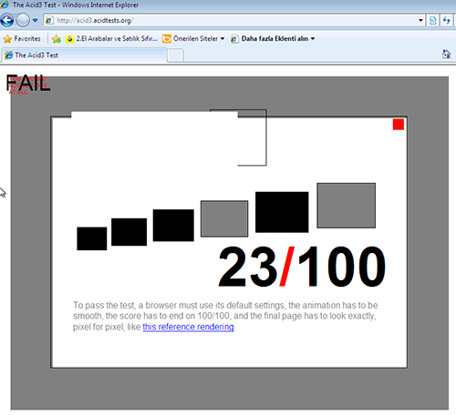

Sırayla İnternet Explorer sürümlerini bitirme yazıları yazmak sevindirici. İE8 şu anda %10 civarında ve düşmeye devam ediyor. Hala çok yoğun olarak kullanılan Windows XP’de İnternet Explorer 8 üstü tarayıcı kurulamıyor olması İE8’in güncellenmemesine neden oluyor. İE 8 yeni standartlar konusunda kısır bir tarayıcı HTML5 ve CSS3 özelliklerinin çoğunu desteklemiyor. Yeni stadart test iiçin yapılan ACID3 testi bunun en yii göstergesi; 100 üzerinden 23 alarak sınıfta kalıyor.

Tarayıcı desteği konusunda hala bir çözüm bulunamamış olması bir sorun. Aslında otomatik güncelleme yapan tarayıcılar için artık tarayıcı desteği sorun olmaktan çıktı. Maalesef bu konuda Microsoft her zaman ki gibi teknolojinin gerisinde kalıyor. Artık bunu bilerek yaptığına kanaat getirdim.
jQuery yeni sürümü 2.0 ie birlikte İE8 ve alt sürümlerin değini kaldırdı. İE( ve altı sürümlerin javascript performansının kötü olması bu kararda önemli.
CSS3 desteği (%15 den %54 çıkıyor.)
- CSS3 Seçici Desteği
- :target seçicisi
- :disabled
- :enabled
- :checked
- :nth-child() sözde sınıfı
- :nth-last-child() sözde sınıfı
- :nth-of-type() sözde sınıfı
- :nth-last-of-type() sözde sınıfı
- :last-child sözde sınıfı
- :first-of-type sözde sınıfı
- :last-of-type sözde sınıfı
- :only-child sözde sınıfı(Tek çocuk)
- :only-of-type sözde sınıfı
- :root Sözde Sınıfı
- :empty sözde sınıfı
- Olumsuz(:not) Sözde Sınıfı
- ::selection Sözde Elementi
- CSS3 Değerleri
- ch değeri
- Bakış Alanı Değerleri (View Port)
- Renk değerleri (rgba, hsl, hsla)
- turn değeri
- calc() değeri
- CSS 3 medya sorguları / tepkisel tasarım(responsive)
- box-shadow desteği
- border-radius desteği
- Çoklu Ardalan(background-image)
- background-size desteği
- background-origin ve background-clip desteği
- CSS3 Dönüştürme Özellikleri(Transforms) ve 2B Dönüştürme
- @font-face Woff desteği Farklı yazı tiplerini oluşturmaya gerke kalmadan woff ile tüm tayıcı desteği sağlanmış olacak.
- opacity standart desteği (filtresız)
- Renk geçişi (svg li çözüm)
HTML5 Desteği
- Canvas
- SVG desteği
- Yeni Elementler header, footer, aside, section, article vs.
- Video elementi
- Auido elementi
Javascript
- ECMAScript 5
- document.getElementsByClassName
- window.getComputedStyle
- Geolocation API
- Navigation Timing API
Ayrıca 64 adet sorundan daha kurtulmuş olacağız.
Sonuç
Yeni standartlar açısından bir çok kazanımımız olacağı kesin ama hala İE sürümleri ile uğraşmaya devam edeceğiz. İE9’un hızlı düşüşü(%5) bizi ümitlendiriyor, muhtemelen yüzdesi daha hızlı düşecek. Microsoft’un İE10’a güncelleme zorunluluğu İE9 oranlarını düşürdü. Umarım en yakın zamanda İE biter.
Kaynaklar
- http://blog.fili.nl/benefits-of-dropping-ie8-support/
- http://www.computerworld.com/s/article/9231316/Google_to_drop_support_for_IE8_on_Nov._15
- http://net.tutsplus.com/articles/editorials/jquery-in-2013-or-how-to-properly-drop-ie/
- http://www.sitepoint.com/browser-trends-july-2013/
- http://fatihhayrioglu.com/internet-explorer-9/
- http://robinwinslow.co.uk/2013/02/28/time-to-say-goodbye-to-ie8/
- http://msdn.microsoft.com/en-us/library/cc351024(VS.85).aspx
- http://theie8countdown.com/
- http://www.gtalbot.org/BrowserBugsSection/MSIE8Bugs/
Yorumlar !